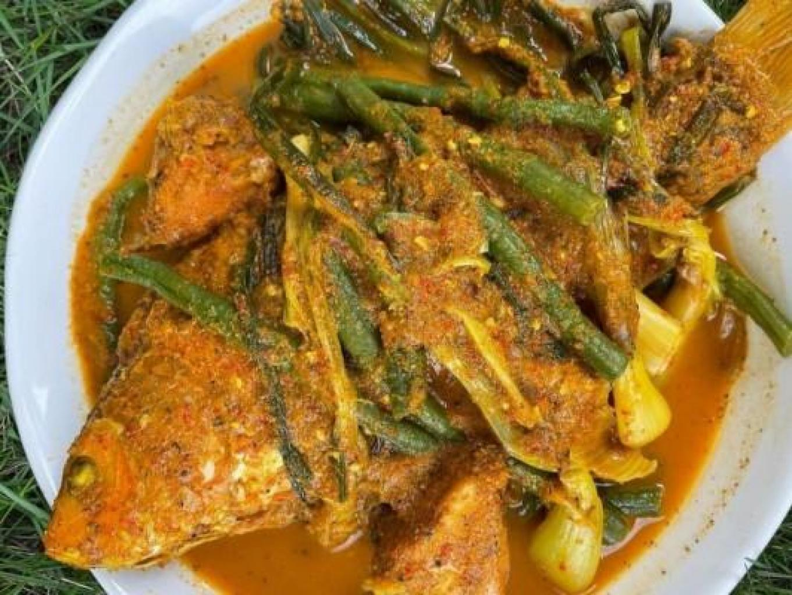
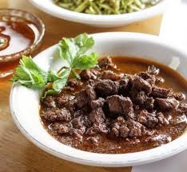
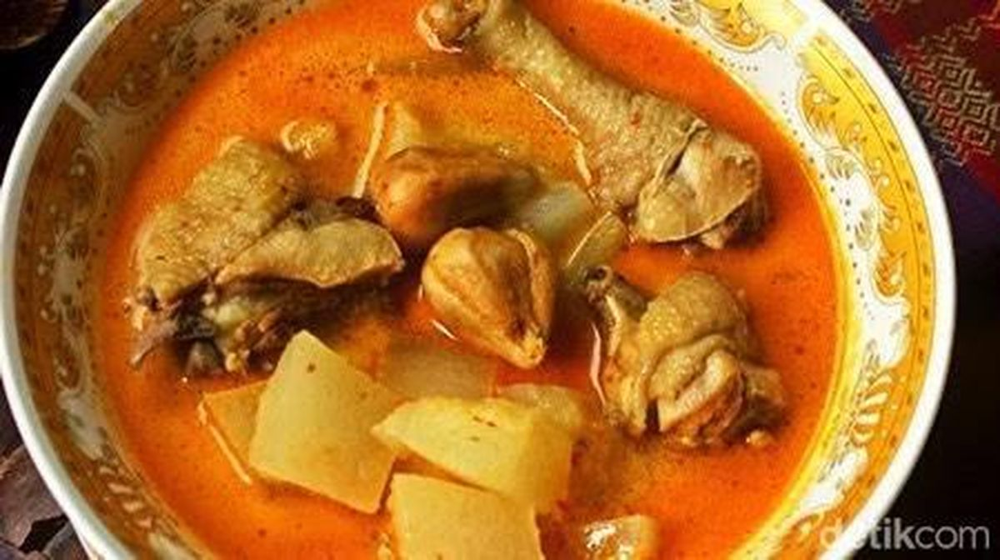

Ikan Mas Arsik
Menu khas Batak dengan bumbu kuning rempah yang kuat.
Rp 125.000 / ekorMasakan Rumahan Khas Batak
Cita rasa kampung halaman yang selalu dirindukan. Menyediakan Ikan Mas Arsik, Ayam Gule, Ayam Gota, Babi Saksang, Babi Panggang, Sop Iga Babi, Daun Singkong, Ketupat Ketan, dan menu khas Batak lainnya.


Menu khas Batak dengan bumbu kuning rempah yang kuat.
Rp 125.000 / ekor
Menu favorit dengan bumbu khas Batak yang gurih dan pedas.
Rp 200.000 / kg
Ayam dengan kuah santan berbumbu, cocok untuk acara keluarga.
Rp 220.000 / ayamKami menerima pesanan untuk arisan, syukuran, ulang tahun, catering, dan acara keluarga.
Buat Pesanan